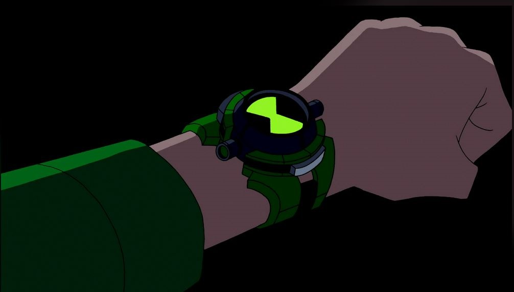
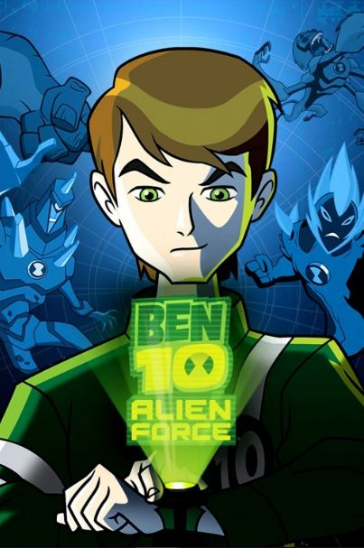
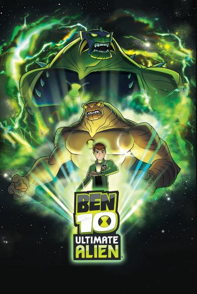

ALIENÍGENAS DEL OMNITRIX RECALIBRADO
La función de este es la misma que la del prototipo, pero de una mejor forma y más fácil de utilizar. Esto es debido a que se vuelve más accesible para el usuario permite conseguir muestras de manera manual y tiene un mejor apartado visual que le permite al portador sacárselo más sencillamente.

FUEGO PANTANOSO SUPREMO
Ben 10 llamó así a este alien ya que es el mismo pero de forma suprema, esto quiere decir que es un methanosiano pero mejorado y a diferencia no tiene planeta de origen ya que proviene de una simulación del ultimatrix. Sus habilidades son poder lanzar llamas azules hechas de queroseno en lugar de ser de metano, lanzar bombas de sus brazos, su espalda y su cabeza y tener un mejor control de las plantas, pudiendo realizar cosas más complejas y complicadas que antes.
APARECE EN:

FRÍO
Frío fue como llamó Ben 10 al necrofriggiano que es proveniente del planeta Kylmyys el cual, al no girar y estar totalmente quieto, se dividió en una parte del mundo siendo totalmente hielo y estando congelado y la otra parte estando totalmente en llamas. Este alien tiene la capacidad de generar hielo con el tacto, con su cuerpo y con su aliento y su ultima habilidad es la de poder volverse intangible para así congelar por donde pasa.
APARECE EN:


PIEDRA
El crystalsapien del omnitrix fue llamado como "Piedra" siendo este proveniente de un lugar desconocido, pero la muestra es de Petropia (El planeta de Diamante). En este planeta, él era un protector y siendo el unicó en ser capaz de reconstruir el planeta entero en caso de una catastrofe. Las habilidades de Piedra se estima que son muchas, siendo la mayoría desconocidas, pero las que se conocen son la capacidad de volar a grandes velocidades y de tener las propiedades de un prisma para usarlo de forma defensiva u ofensiva.
APARECE EN:
HUMUNGOSAURIO
Humungosario es un vaxasauriano del planeta Terradino el cual es como un mundo antiguo al nuestro por su terreno. Este alien fue el más querido por Ben 10, ya que a él le encantaba el combate de sumos y la especie realiza torneos de combate comúnmente. Sus habilidades son tener: la fuerza de 5 trenes, correr a velocidad común sin importar su peso y la de poder agrandarse multiplicando su tamaño hasta los 20 metros y desarrollar unas corazas que lo protejan junto a una cola con pinchos.
APARECE EN:
ECO ECO
El sonorosian que Ben 10 llamó "Eco Eco" proviene del planeta Sonorosia el cual está repleto de varias cuevas donde estos viven para así utilizar su poder con mayor eficiencia y para esconderse de sus depredadores. Este alienígena tiene la capacidad de provocar ondas sonoras de altas frecuencias capaces de detener explosiones de mayor potencia que las de la Tierra y pueden multiplicarse a voluntad, cada clon es independiente por lo que no importa cuantos mueran mientras exista uno para seguir multiplicándose.
APARECE EN:
MONO ARAÑA
Este alien fue nombrado como "Mono Araña" siendo su especie los aracnochimpancé los cuales son del planeta Aracna siendo este un mundo con árboles tan grandes que sirven para vivir en lo alto y evitar los depredadores del suelo. Este alien hace referencia al héroe Spider-man. Las habilidades de este alien son las de una araña pero con mayor potencia en las redes, teniendo la capacidad de luchar como un humano y la de generar redes sin límites.
APARECE EN:
CEREBRÓN
Cerebrón es el nombre que puso Ben 10 al cerebrocrustáceo del planeta Encephalonus IV, este planeta llegó al número cuatro ya que a pesar de lo que parece son malos administrando recursos llevando al agotamiento de estos en tres ocaciones donde finalmente aprendieron a manejar los recursos. Esta especie tienen un gran intelecto que compite con los galvans (La especie de Materia Gris), pero siendo inferiores, también pueden utilizar la electricidad de su cerebro para usarlo como medio de ataque, de defensa o para volar.
APARECE EN:
JETRAY
El aerofibio que Ben 10 llamó "Jetray" proviene del planeta Aeropela, del cual no hay mucha información, pero se cree que cuenta con una gran cantidad de cielo, mar y tierra ya que son los terrenos donde puede habitar esta especie. Sus habilidades son poder volar a grandes velocidades al punto de poder ir a velocidad hyper extrema, por todos los terrenos incluyendo el espacio y disparar rayos de energía por sus ojos y la punta de su cola.
APARECE EN:
GOOP
Este alien llamado Goop es un polimorfo proveniente de planeta Viscosia el cual, al haber poca información, se cree que es un mundo totalmente cubierto de una viscocidad desconocidad. Este alienígena tiene la capacidad de modificar su cuerpo para llegar a lugares que otros no pueden, pueden regenerarse completamente desde la pieza más pequeña de su ser y poder utilizar su limo con un potente ácido que puede corroer todo lo que toca en estándares de la Tierra.
APARECE EN:
LODESTAR
Ben 10 llamó "Lodestar" al alien de especie biot-savrtian provenientes del planeta Maxwell el cual es un mundo totalmente amorfo estando totalmente recubierto de un material desconocido con propiedades magnéticas. Este alien tiene la capacidad de controlar lo metálico para utilizarlo de alguna forma con sus poderes magnéticos, los cuales son capaces de levantar, destruir o construir con el metal que él agarra con el magnetismo.
APARECE EN:
CLOCKWORK
Clockwork es un cronosapien con lugar de origen desconocido el cual se cree que no es un planeta sino un momento específico de las líneas del tiempo. Este alien es muy desconocido, pero se lograron saber sus habilidades las cuales son todas las que tengan que ver con el tiempo ya que esta especie son los seres del tiempo podiendo modificarlo casi en su totalidad a su antojo permitiéndolos hacer varias cosas y tener la habilidad de lanzar un rayo de tiempo que lo que lo toque le pueden pasar muchas cosas.
APARECE EN:
ALIEN X
Alien X es el nombre que se dio a sí mismo el celestialsapien del omnitrix, esta especie proviene del fuerte de la creación siendo un lugar que está más allá de todo. adentro del Alien X se encuentran dos conciencias las cuales son Serena (La voz del amor y la compasión) y Bellicus (La vos de la ira y la agresión) cuando ellos dos y Ben 10 lleguen a un acuerdo se realiza lo que se votó, siendo esto capaz de ser cualquier cosa, porque el Alien X es un ser omnipotente, siendo el ser más poderoso de toda la ficción.
APARECE EN: